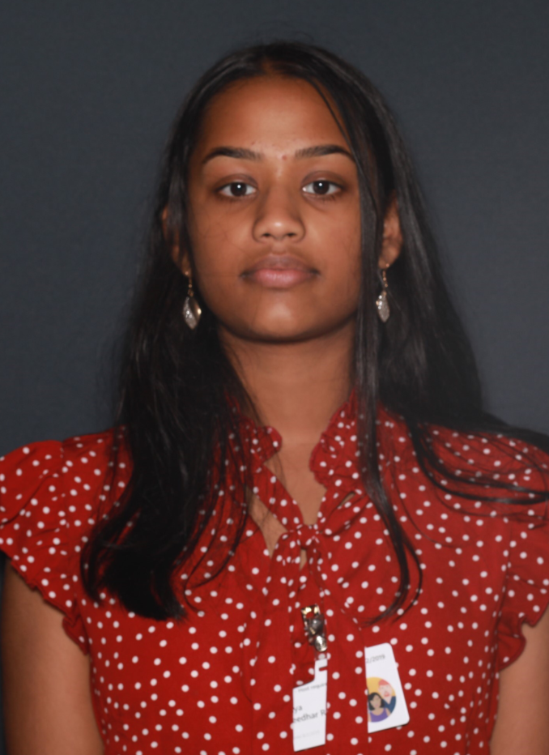

Home | Sports | Self Care
Our Mission
At girlSportscentral we strive to inspire women to be go-getters without being afraid to take a leap of faith, even with the possibility of failure. By providing basic information on specific sports and self care, we believe it will take away some of those first day jitters and also convince prospective athletes to sign up in the first place. As upperclassmen and student athletes ourselves, looking out for new and prospective athletes is what we do best!
~ girlSportscentral team
Meet The Team
Marina Montanez
As a learning enthusiast I have always loved designing and creating things which led me to take classes in digital creation and design. The most recent class being the Girls Who Code Summer Immersion Program. I'm learning about design, coding, and business so I can deliver high quality and robustly crafted solutions to broader problems. I'm excited for college as this is my senior year in high school and I am open to internship opportunities to gain more experience.
Linkedin | InstagramKiera Robinson
I am currently a junior at Redmond High School and I am a student athlete. I play softball and have been for ten years. My favorite subject is math and I want to go to the University of Washington or Arizona State University. I moved here to Redmond about three years ago from Anaheim, California. I have participated in the Girls Who Code Summer Immersion Program this summer.
Linkedin
Manaswee Prathikantum
I'm a rising junior at Redmond High and also part of the Girls Who Code program. Last summer I did an intro to computer science WANIC. Through this I found that computer science really interested me, so I decided to join GWC to learn more. In my free time, I love to go on hikes, play badminton and tennis.
LinkedinUwaezu Kalu
Currently I'm a senior at Mariner High School and part of the running start program at Everett Community College. I became intrested in STEM through programs like ChickTech Seattle and MESA. From there I joined another program this summer called Girls Who Code which combinded both my loves for business, and computer science. I plan on pursuing both when I go to college! On my free time I like to cook, draw and play basketball.
Linkedin | Instagram